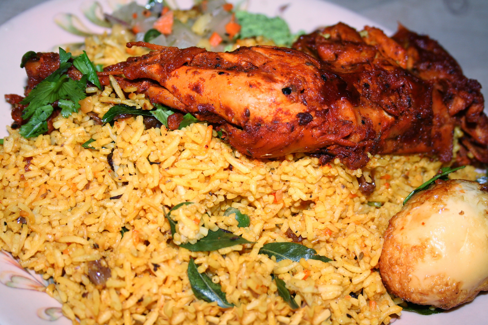

Home
Chicken Biryani

Image by
Shehal at English Wikipedia,
licensed under
CC BY-SA 3.0,
via Wikimedia Commons. No modifications made.
Description
Chicken Biryani is a popular South Asian rice dish made with fragrant basmati rice, tender chicken, aromatic spices, and herbs.
The chicken is marinated in yogurt and spices, then cooked with onions, tomatoes, ginger, and garlic to create a rich and flavourful mixture.
The rice and chicken are layered together and cooked until the rice is fluffy and the chicken is tender. Flavoured with spices such as cinnamon,
cardamom, cloves, and cumin, Chicken Biryani is a delicious and satisfying meal often served with raita or a fresh salad.
Ingredients
- 500 g chicken, cut into pieces
- 2 cups basmati rice
- 1 large onion, thinly sliced
- 2 tomatoes, chopped
- ½ cup plain yogurt
- 2 tablespoons ginger-garlic paste
- 2 tablespoons cooking oil or ghee
- 1 teaspoon cumin seeds
- 2–3 green cardamom pods
- 1 cinnamon stick
- 3–4 cloves
- 1 bay leaf
- 1 teaspoon turmeric powder
- 1 teaspoon red chilli powder
- 1 teaspoon garam masala
- 1 teaspoon biryani masala
- 2 tablespoons chopped fresh coriander
- 2 tablespoons chopped fresh mint
- Salt, to taste
- 3 cups water, approximately
- A few strands of saffron soaked in warm milk (optional)
Steps
- Wash the rice: Rinse the basmati rice under cold water until the water runs mostly clear. Soak it for about 20–30 minutes, then drain.
- Marinate the chicken: In a bowl, combine the chicken, yogurt, ginger-garlic paste, turmeric, red chilli powder, garam masala, biryani masala, and salt.
Mix well and leave to marinate for at least 30 minutes.
- Fry the onions: Heat the oil or ghee in a large, heavy-bottomed pot. Add the sliced onions and cook until golden brown. Remove a small portion for garnishing, if desired.
- Cook the chicken: Add the cumin seeds, cardamom, cinnamon, cloves, and bay leaf to the pot. Stir briefly, then add the marinated chicken and chopped tomatoes.
Cook for about 10–15 minutes, stirring occasionally.
- Prepare the rice: In another pot, bring water to a boil with some salt. Add the drained rice and cook until it is approximately 70% cooked. Drain the rice.